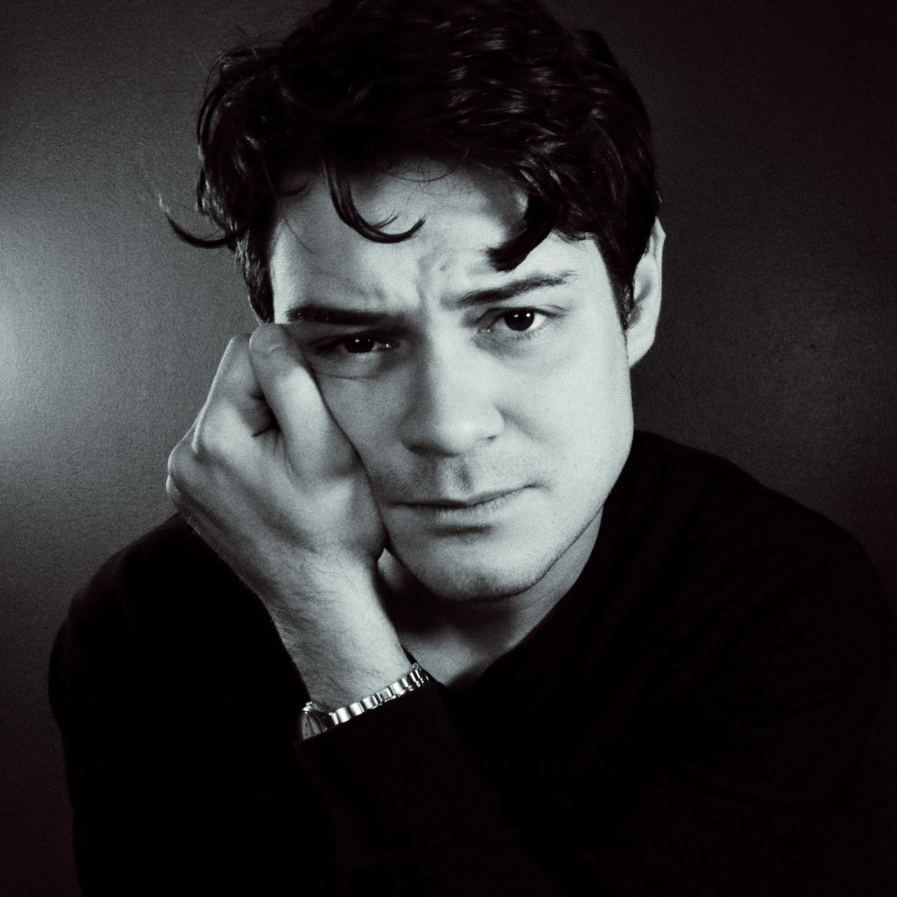

Screen and Stage
My next shows, on stage and on screen.
- "Almost, Maine" at Rosemary Branch Theatre, London
- "Saddled", short film produced by Curious People

Designer, videographer, and maker of things on the internet.
My next shows, on stage and on screen.